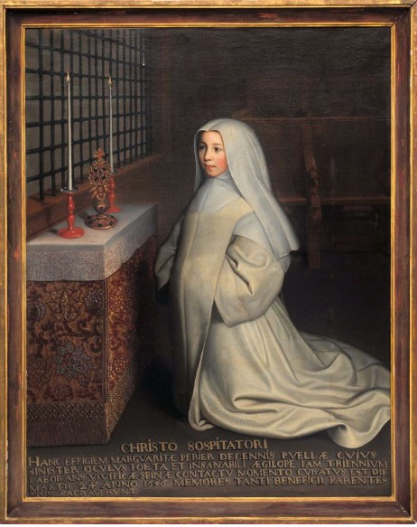

Viața lui Blaise Pascal scrisă de Marguerite Périer
nepoata lui Blaise Pascal

Fratele meu s-a născut la Clermont, pe 19 iunie 16232. Tatăl meu se numea Etienne Pascal, şi era
preşedinte al Curţii de Apel, iar mama mea se nu mea Antoinette Begon. De îndată ce fratele meu atinse vârsta la care i se putea vorbi, apărură sem
nele unei inteligenţe cu totul ieşite din comun, prin observaţiile pe care le făcea mereu în legătură cu orice, dar mai ales prin întrebările pe care le punea despre natura lucrurilor, întrebări care surprindeau pe toată lumea. Acest început, atât de plin de promi siuni, nu se va dezminţi niciodată, căci, pe măsură ce creştea, forţa raţionamentelor lui sporea, în aşa fel încât îşi depăşea mereu vârsta.
Mama a murit în anul 1626, pe când fratele meu nu avea decât trei ani. Tatăl meu, rămânând singur, fu obligat să se aplece cu şi mai multă grijă asupra familiei; şi cum nu avea decât un singur fiu, cali tatea lui de fiu unic şi semnele unui mare spirit pe care le desluşea în acest copil îi treziră o atât de mare afecţiune pentru el încât nu s-a putut niciodată decide să lase pe seama altcuiva educaţia fiului său, hotărând să se ocupe singur de instrucţia lui, cum a şi făcut de altfel, fratele meu neavând niciodată alt profesor în afară de tatăl meu.
În anul 1631, tatăl meu se retrase la Paris, unde
ne aduse pe toţi şi unde-şi stabili reşedinţa. Fratele meu, care nu avea pe atunci decât opt ani, profită cel mai mult de pe urma acestei retrageri, privitor la proiectul tatălui meu de a se ocupa de educaţia lui; căci, fără îndoială, grija lui n-ar fi putut fi atât de
mare în provincie, unde funcţia şi lumea care-l frecventa în permanenţă l-ar fi împiedicat s-o facă. Dar cum la Paris trăia într-o libertate deplină, el i se dedică în întregime şi se bucură de toate succesele de care se poate bucura un tată atât de inteligent şi atât de iubitor pe cât era tatăl meu. Principala sa maximă în această educaţie era să ţină copilul mereu aplecat asupra unui lucru potrivit cu vârsta lui . Din acest motiv n-a vrut deloc să-I înveţe latina până la doisprezece ani, pentru ca să-i vină mai uşor s-o facă.
Între timp, n'.l-l lăsa niciodată fără ocupaţie,
vorbind cu el despre tot ceea ce putea înţelege. I-a explicat mai întâi ce erau limbile; i-a arătat cum au fost acestea sistematizate în gramatici, conţinând anumite reguli, cum şi aceste reguli aveau excepţii de care trebuia să se ţină seamă: aşa s-a găsit mijlo cul de a face toate limbile comunicabile de la o ţară la alta. Această idee generală i-a limpezit mintea şi l-a făcut să vadă temeiul regulilor gramaticii, în aşa fel încât în clipa în care a trebuit să le înveţe, le ştia deja rostul aplecându- se cu precizie asupra acelor lucruri care-i solicitau o mai mare străduintă.
După aceste cunoştinţe, tatăl meu îi mai oferi şi altele; îi vorbea adesea despre efectele extraordinare ale naturii, despre praful de puşcă şi despre alte lucruri surprinzătoare când le cercetezi. Fratelui meu îi plăceau foarte mult aceste conversaţii, dar voia să ştie raţiunea tuturor lucrurilor şi , cum ele nu sunt toate cunoscute, când tata nu i le dezvăluia sau îi spunea ceea ce se spune de obicei, lucruri fără importanţă, constituind simple expediente, era foarte nemulţumit, căci avea întotdeauna o extraordinară limpezime de spirit, discernând falsul, încât se poate spune că dintotdeauna şi în toate lucrurile adevărul era unicul scop al minţii sale; nimic nu l-a putut mulţumi niciodată, decât cunoaşterea adevărului . Astfel, încă din copilărie, nu se supunea decât unui adevăr evident, aşa încât de câte ori nu i se prezen tau temeiurile reale, le căuta singur şi când se ocupa de un lucru nu-l părăsea până când nu găsea acel ceva care-i putea satisface curiozitatea.
Odată, aftându-ne în jurul mesei, cineva a lovit fără să vrea o farfurie de faiantă cu un cutit; fratele meu observă imediat că se auzea un sunet puternic, dar dacă se acoperea farfuria cu mâna, sunetul nu se mai auzea. Vru să ştie imediat cauza şi această experienţă l-a ajutat să descopere şi alte lucruri cu privire la sunet, consernând o mulţime de observaţii într-o lucrare care fu considerată, pentru vârsta lui de doisprezece ani, ca fiind foarte bine gândită.
Geniul său în geometrie3 se manifestă pe când încă nu împlinise doisprezece ani, printr-o întâm plare atât de neobişnuită că merită să ne reţină atenţia în mod special.
Tatăl meu era un savant în matematici şi întreţinea legături cu toate personalităţile abilitate în această ştiinţă, care-l vizitau adesea; dar cum el intenţiona să-I instruiască pe fratele meu în limbi şi cum ştia că matematica este un lucru care dă satisfacţii depline spiritului, nu dorea ca fratele meu să dobândească asemenea cunoştinţe, de teamă că ar putea neglija latina şi celelalte limbi în care ar fi vrut să-I per fect, ioneze. De aceea ascunsese toate cărtile care se ocupau de această ştiinţă şi se abţinea să vorbească despre ea cu prietenii lui în prezenţa fratelui meu.
Dar această precauţie n-a împiedicat în nici un fel trezirea curiozităţii fratelui meu, care-l ruga adesea pe tata să-I înveţe matematica. Acesta îl refuza promi ţându-i, ca pe o recompensă, că-I va învăţa imediat ce va cunoaşte foarte bine greaca şi latina.
Fratele meu, văzând această opoziţie, îl întrebă într-o zi ce era această ştiinţă şi cu ce se ocupa ea. Tata i-a spus că, în general, ea îţi pune la dispoziţie mijloacele de a desena exact anumite figuri şi de a afla proporţiile existente între ele, interzicându-i în acelaşi timp să mai vorbească despre acest lucru şi să se mai gândească vreodată la el. Dar lui care nu putea fi în nici un fel mărginit, imediat ce i se descoperi acest mic orizont că matematica i-ar oferi mijloacele de a desena figuri infailibile, astfel
începu să viseze la ele şi, în orele lui de odihnă, fiind singur într-un salon, unde avea obiceiul să se joace, se apucă să deseneze cu cărbune asemenea
figuri pe pardoseam. Încercă să obţină un cerc per
fect, un triunghi cu unghiurile şi laturile egale şi alte lucruri asemănătoare; făcând toate acestea, căuta proporţiile figurilor; dar cum grij a tatălui meu de a-i ascunde aceste lucruri fusese atât de mare, el nu ştia nici măcar numele figurilor, fiind constrâns să-şi găsească singur definiţii; boteză cercul ROTUNd, linia bară şi aşa mai departe. După aceste definiţii îşi construi nişte axiome şi până la urmă câteva demonstraţii perfecte. Trecând de la una la alta, el împinse căutările atât de departe că aj unse să for
muleze a treizeci şi doua teoremă a lui Euc1id4•
Până când, într-o zi, tata, care nu bănuia nimic, intră în salon fără ca fratele meu să-I audă, fiind atât de preocupat de jocul lui ; văzându-l, se sperie din cauza interdicţiei care i se impuse de a se gândi la aceste lucruri. Dar surpriza tatălui meu fu şi mai mare; văzându-1 înconjurat de toate acele figuri, îl întrebă ce face acolo şi fratele meu îi răspunse că studia cutare lucru care nu era decât a treizeci şi doua teoremă a lui Euclid. La întrebarea tatălui meu cum ajunsese la ea, fratele meu îi răspunse că desco perise ceva care-l adusese aici şi-i mai formulă o teoremă, iar la următoarea întrebare răspunsul lui fu tot o teoremă; şi aşa, mergând pe firul apei înapoi şi
tot explicând, numindu-Ie bare şi rotunduri, aj unse la primele definiţii şi axiome de la care plecase.
Tata se înspăimântă de întinderea şi puterea acestui geniu şi rară să-i spună nimic se duse la domnul Le Pailleur6, prietenul lui foarte apr<;>piat, un mare
savant şi el. Când aj unse la el, intră şi rămase nemişcat ca un om care- şi pierduse firea, încât dom nul Le Pailleur, văzându-l şi zărind chiar lacrimi în ochii lui, se sperie şi-l rugă să nu-i mai ascundă cauza necazului său. Tata îi zise: "Nu plâng de ne caz, ci de bucurie. Ştiţi grija cu care l-am ferit pe fiul meu de cunoaşterea geometriei, de teama de a nu-l îndepărta de la alte studii şi uitaţi ce a racut." Şi-i arătă tot ce găsise, putându-se spune într-un fel că era vorba de cineva care reinventase matematica. Domnul Le Pailleur nu fu mai puţin surprins decât tatăl meu şi-i spuse că nu i se părea drept să împiedice în continuare acest spirit, ascunzându-i asemenea cunoştinţe, că trebuia lăsat să vadă cărţile
rară să-I oprească mai mult.
Tatăl meu, gândindu-se că vorbele lui erau po trivite, îi dădu fratelui meu elementele lui Euclid să le citescă în orele sale de odihnă. El le citi şi le înţelese singur fără să aibă nevoie de vreo explicaţie
şi, în timp ce le studia, inventa altele, progresând şi
ajungând atât de departe în studiul său încât putea participa cu regularitate la conferinţele săptămânale în care oamenii abilitaţi din Paris se adunau pentru a-şi prezenta operele şi pentru a le examina pe ale
altora•
Fratele meu era egalul tuturor, atât în examinarea lucrărilor cât şi în elaborarea lor, fiind unul din cei
care aduceau mereu lucmri noi. Se studiau adesea în aceste adunări teoreme trimise din Gennania sau din alte ţări şi i se cerea părerea asupra tuturor mai mult decât celorlalţi, căci lumina minţii lui era atât de vie că i se întâmpla uneori să descopere greşeli pe care nimeni nu le-ar fi sesizat.
Şi totuşi el nu-şi dedica acestui studiu dect orele sale de repaus, pentm că învăţa latina, după aceleaşi reguli impuse de tatăl meu. Dar cum în această ştiinţă el găsea acel adevăr pe care-l căutase atât de mult şi era atât de deplin satisfăcut, mintea lui nu era decât la studiul ei, în aşa fel încât chiar dacă s-a ocupat puţin de ea, la vârsta de şaisprezece ani va scrie un tratat despre conice care fu socotit un efort atât de mare al minţii lui încât se spunea că de la Arhimede încoace nu s-a mai văzut un spirit de o asemenea forţă.
Toţi aceşti savanţi fură de părere ca studiul să fie imediat tipărit, susţinând că, în afară de faptul că lucrarea este admirabilă, apariţia ei în vremea în care automl nu avea încă şaisprezece ani i-ar spori mult fmmuseţea; dar, cum fratele meu nu era delot inte resat de faima lui, nu se ocupă s-o tipărescă, ea rămânând nepublicată.
În tot acest timp continua să înveţe latina şi greaca
şi, pe deasupra, în timpul prânzului sau după prânz, tata conversa cu el despre logică, despre fizică sau despre alte părţi ale filosofiei, acestea constituind singura lui învăţătură, el neurmând vreodată vreun colegiu şi neavând niciodată un alt profesor la aceste materii cum n-a avut nici pentru celelalte.
Vă puteţi imagina plăcerea pe care o încerca tata faţă de progresele fratelui meu în toate aceste cunoştinţe, fără să-şi dea seama însă că marile şi pelmanentele eforturi ale spiritului la o vârstă atât de fragedă i-ar putea şubrezi sănătatea; şi, într-adevăr, ea începu să se altereze de îndată ce împlini vârsta de optsprezece ani. Dar cmn durerile pe care le simţea atunci nu-l incomodau foarte tare, ele nu-l împiedi cară să-şi continue ocupaţiile sale obişnuite, în aşa fel încât în vremea aceea, la vârsta de nouăsprezece ani, inventa acea maşină aritmetică de calculat cu aj utorul căreia nu numai că se puteau face tot felul de calcule fără condei sau jetoane, dar se puteau
face chiar dacă nu ştiai nici o regulă aritmetică, exactitatea calculelor fiind infailibilă8 •
Această lucrare a fost considerată o noutate în genul ei, prin faptul că reducea la o maşină o ştiinţă socotită a fi pe de-a-ntregul spirituală, descoperind modalitatea de a face tot felul de operaţii cu mare certitudine, fără să fie nevoie de raţionamente.
Această muncă îl obosi mult, nu prin gândire sau mişcare, pe care le făcea cu mare uşurinţă, ci din pricina efortului depus pentru a-i face pe muncitori să înţeleagă aceste lucnr, trebuindu-i doi ani ca să atingă perfecţiunea la care ea se află astăzi.
Dar oboseala şi fragila lui sănătate i-au provocat dureri care nu-l mai părăsiră de la vârsta de optsprezece ani, după cum ne spunea chiar el, că de
la această vârstă practic n-a mai trăit o zi rară dureri. Dar acestea nefiind de o violenţă egală, imediat ce-i dădeau răgaz, spiritul lui era mereu preocupat să găsească ceva nou.
În vremea aceea, pe când avea douăzeci şi trei
de ani, văzând experienţa lui Toricelli, inventă şi execută la rândul lui alte experienţe pe care le-a numit experienţele vidului, care dovedeau limpede că toate efectele care fuseseră atribuite ororii de vid erau cauzate de greutatea aerului.
Această ocupaţie a fost ultima în domeniul ştiin ţelor umane: şi cu toate că avea să inventeze ruleta mai târziu, faptul nu vine în contradicţie cu ceea ce spun eu acum, căci o va descoperi rară să se gân dească la ea şi într-o manieră care dovedeşte că nu fusese în vreun fel preocupat de ea, aşa cum voi arăta la locul cuvenit.
Imediat după aceste experienţe9 şi pe când nu
împlinise încă douăzeci şi patru de ani, providenţa dumnezeiască prilejuindu-i o ocazie care-l obligă să citească anumite lucrări religioase, Dumnezeu îl lu mină prin aceste lecturi, racându-l să înţeleagă per fect că religia creştină ne obligă să nu trăim decât pentru Dumnezeu şi să nu avem alt scop decât pe el; şi acest adevăr i se păru atât de evident, atât de necesar şi atât de util încât încheie aici absolut toate cercetările, renunţând la toate celelalte cunoştinţe, pentru a se dedica numai şi numai acelui lucru pe care Iisus Christos îl crede necesar.
Fusese ferit până atunci, printr-o protecţie deo sebită a lui Dumnezeu, de toate viciile tinereţii şi, ceea ce este mai ciudat la un spirit de o asemenea calitate şi forţă, nu s-a dedat niciodată libertinajului în privinţa religiei, mărginindu-şi curiozitatea la lucrurile naturale; mi-a mărturisit de multe ori că aceasta era încă una dintre datoriile pe care le avea faţă de tatăl nostru care, având el însuşi un mare respect pentru religie, îi inspirase acest respect din copilărie, oferindu-i drept precept că obiectul cre dinţei nu poate fi şi obiectul raţiunii şi cu atât mai puţin nu i se supune acesteia.
Spiritul fratelui meu era atât de marcat de aceste maxime, repetate adesea de tatăl meu, pentru care avea o mare stimă şi în care vedea o mare ştiinţă însoţită de o puternică şi limpede raţiune, încât orice discurs al libertinilor ar fi auzit nu-i trezea nici un interes; şi cu toate că era foarte tânăr, îi considera ca pe nişte oameni care trăiau Într-un principiu fals, anume că raţiunea umană se află deasupra tuturor lucrurilor, necunoscând natura credinţei: astfel, acest spirit atât de mare, atât de cuprinzător şi plin de curiozitate, care căuta cu atâta grijă raţiunea şi cauza lucrurilor, se supunea în acelaşi timp religiei ca un copil. Această simpatie i-a însoţit toată viaţa, în aşa fel încât din clipa în care a hotărât să nu se mai ocupe de altceva decât de religie, el nu s-a gândit niciodată la acele probleme ciudate ale teologiei, ci şi-a pus toată forţa spiritului în cunoaşterea şi perfecţionarea moralei creştine căreia i-a consacrat
tot talentul pe care i-l dăduse Dumnezeu; nemai
făcând altceva toată viaţa decât să mediteze zi şi noapte la legea lui Dumnezeu.
Şi cu toate că n-a făcut studii speciale de scolas tică, ştia hotărârile Bisericii împotriva ereziilor inven tate de rafinamentele spiritului şi împotriva acestor căutări a luptat el cel mai mult; Dumnezeu i-a oferit încă din vremea aceea prilejul de a-şi arăta zelul pe care-l avea pentru religie.
El locuia pe atunci la Rouen, unde tatăl meu se afla în serviciul regelui şi unde a întâlnit un om care preda un fel de nouă filosofie care-i atrăgea pe curioşi 10 . Fratele meu, fiind îndemnat de doi prieteni tineri să-i însoţească, se duse cu ei, dar fură foarte surprinşi de conversaţia pe care o întreţinură cu acel om care le debită lui de filosofie, din care trăgea concluzii asupra credinţei contrare hotărârilor Bisericii.
El voia să dovedească prin raţionamentele lui că trupul lui Iisus Christos nu se crease din sângele Sfintei Fecioare, ci dintr-o materie creată într-adins.
Şi multe alte lucruri de acest gen. Ei încercară să-I contrazică, dar acesta nu cedă deloc în ideile sale. În
aşa fel încât, judecând între ei pericolul de a fi lăsat unui asemenea om libertatea de a-i instrui pe tineri cu astfel de idei eronate, se hotărâră mai întâi să-I avertizeze şi, dacă se împotrivea, să-I denunţe.
Se întâmplă aşa că acest om nu ţinu cont de părerea lor şi atunci ei crezură că e de datoria lor să-I denunţe domnului du Bellay, care îndeplinea pe
atunci funcţia episcopală din dioceza Rouen din în sărcinarea arhiepiscopului. Domnul du Bellayll tri
mise să se facă cercetări cu privire la acest om şi să fie interogat; episcopul se lăsă înşelat de confesiu nea echivocă pe care acesta i-o scrisese şi pe care o semnase cu mâna lui, tăcând puţin caz de un aver
tisment de o asemenea gravitate cum era cel dat de
cei trei tineri .
Totuşi, imediat ce văzură confesiunea, îşi dădură seama de greşeală; ceea ce-i obligă să-I caute la Gaillon pe arhiepiscopul de Rouen care, examinând toate aceste lucruri, le consideră foarte importante şi scrise o patentă consiliului său prin care ordona domnului du Bellay să-I oblige pe acest domn să retracteze asupra tuturor punctelor de care era acuzat şi să nu primească nimic de la el decât prin inter mediul celor care-l denunţaseră. Şi lucrurile se des făşurară întocmai : acesta apăru în faţa consiliului arhiepiscopului şi se lepădă de toate ideile sale şi am putea spune că a tăcut-o sincer, căci nu s-a arătat niciodată supărat pe cei care provocaseră acest scan dal, ceea ce ne face să credem că era posibil ca el însuşi să-şi fi dat seama că s-a înşelat în falsele concluzii pe care le trăgea din falsele sale principii. Fireşte, tinerii nu doriseră să-i facă prin aceasta nici un rău şi nici alt scop n-au avut decât să-I aducă să-şi dea singur seama şi să-I împiedice să mai se ducă alţi tineri care n-ar fi fost capabili să discearnă adevărul de fals în nişte probleme atât de subtile.
Astfel · că acest scandal se încheie cu bine, iar fratele meu continuă să caute din ce în ce mai mult mijloacele de a se face plăcut lui Dumnezeu, iar iubirea pentru perfecţiunea creştină spori atât de tare în el, pe când nu avea decât douăzeci şi patru de ani, încât ea cuprinse întreaga noastră casă: tatăl meu chiar, nefiiI1du-i ruşine să se supună învăţăturilor fiului său, se dedică unei vieţi mai sobre pe care o va perfecţiona prin practicarea continuă a virtuţi lor, până la moartea lui, care s-a petrecut creştineşte. Iar sora mea, ale cărei calităţi spirituale extraordinare îi aduseseră încă din copilărie o reputaţie de care nu se prea bucurau fetele de vârsta ei, fu atât de emoţionată de discursul fratelui ei că se hotărî să renunţe la toate avantajele de care se bucurase până atunci pentru a se consacra în întregime lui Dumnezeu.
Cum era plină de mult spirit, de îndată ce Dumnezeu îi cuceri inima, ea se lumină, înţelegând, la fel de bine ca şi fratele meu, toate lucrurile pe care el i le spunea despre sfinţenia religiei creştine;
şi nemaiputând suporta imperfecţiunea în care trăia în mijlocul lumii, se călugări intrând în mănăstirea foarte austeră de la Port-Royal des Champs, unde a murit la vârsta de treizeci şi şase de ani, după ce îndeplinise funcţii foarte grele, stingându-se astfel la
puţină vreme, înconjurată de o glorie pe care ceilalţi n-o dobândesc decât după mulţi ani 12.
Fratele meu avea pe atunci douăzeci şi patru de ani, durerile sporeau continuu şi aj unsese că nu mai putea înghiţi nici un fel de lichid dacă nu era încălzit, şi pe acesta picătură cu picătură; dar cum avea pe deasupra şi îngrozitoare dureri de cap, o fierbin ţeală a măruntaielor şi multe alte dureri, doctorii îl sfătuiră să-şi golească de tot stomacul, o dată la două zile, timp de trei luni, încât fu obligat să ia toate medicamentele, aşa cum putea el, adică să le încăl zească şi să le înghită picătură cu picătură. Era un adevărat supliciu, iar cei din preajma lui se îngrozeau numai privindu-l; fratele meu nu se plângea însă, pe toate le privea ca pe un câştig pentru el. Necunos când altă ştiinţă decât pe aceea a virtuţii, ştiind că aceasta nu se perfecţionează decât prin suferinţă, aducea cu bucurie toate chinurile sale jertfă căinţei sale; remarcând în toate lucrurile avantajele creşti nismului, zicea că altădată durerile îl îndepărtau de studiile sale şi că îi era foarte greu să le îndure; dar un creştin găseşte un rost în toate şi mai ales în suferinţă; pentru că ştia că Patimile lui Iisus Chris tos trebuie să alcătuiască toată ştiinţa creştinului şi unica glorie a vieţii sale.
Continuând să ia medicamentele prescrise cărora li se adăugară şi altele, durerile îi mai scăzură, fără să se înşănătoşească de tot; aşa încât medicii fură de părere că trebuie să renunţe la orice ocupaţie inte lectuală care ar fi putut avea urmări asupra sănătăţii lui şi să caute cât mai multe ocazii de a se distra, ocupându-se de ceva care să-i facă plăcere : într-un cuvânt, să-şi petreacă timpul în conversaţiile obişnuite cu lumea: alte distracţii n-ar fi fost pe placul fratelui meu; dar cât de greu îi venea unui om sfânt ca el să
se hotărască să facă acest lucru! Într-adevăr făcu eforturi mari la început, dar era atât de constrâns din toate părţile, că se lăsă convins de ideea că avea să-şi recapete astfel sănătatea: îl făcură să înţeleagă că acesta era un capital pe care Dumnezeu ni l-a dat şi trebuie să-I păzim.
A fost partea din viaţa lui cea mai fără rost; dacă e adevărat că prin slava lui Dumnezeu el fu ferit de vicii, la fel de adevărat e că aerul lumii nu se po triveşte cu aerul Evangheliei. Dumnezeu, care cerea de la el perfecţiunea, nu vru să-I lase prea mult timp şi se folosi de sora mea ca să-I aducă înapoi, tot aşa cum se folosise de el pentru a o retrage pe sora mea din angajamentele ei lumeşti.
De când se călugărise, fervoarea ei creştea mereu şi toate sentimentele ei erau pline de o sfinţenie fără rezerve; iată de ce, . ea nu putea suporta ca acela căruia ea îi era datoare, după Dumnezeu, harul de care se bucura să nu se afle în posesia aceluiaşi har; şi cum fratele meu o vizita adesea, ea îi vorbi despre acest lucru şi-l convinse să părăsească lumea şi toate legăturile cu lumea, din care chiar cele mai inocente nu sunt decât nişte zădămicii fără leac, nedemne de sfinţenia creştinismului spre care suntem chemaţi şi căruia îi este exemplu Iisus Christos.
Motivul sănătăţii sale, care-l convinsese mai înainte, i se păru atât de jalnic, că i se făcu lui însuşi ruşine. Lumina adevăratei înţelepciuni îl făcu să descopere că Mântuirea trebuie preferată oricărui lucru şi că însemna să raţionezi fals mulţumindu-te
cu un bine trecător al trupului când e vorba de câştigat veşnicia sufletului.
Avea treizeci de ani când se hotărî să părăsească aceste noi legături pe care le făcuse cu lumea; îşi schimbă locul şi, pentru a rupe definitiv cu toate obiceiurile de până atunci, se mută la ţară, de unde, întorcându-se după ce stătuse o vreme mai retras, mărturisi atât de ferm că vrea să părăsească lumea, că până la urmă lumea îl părăsi.
În sfârşit, el acţiona întotdeauna prin principii în toate lucrurile, spiritul şi inima lui fiind făcute aşa
cum erau, nu putea să se poarte altfel . Retrăgân du-se îşi propuse două maxime, două maxime te meinice ale adevăratei pietăţi; una privea renunţarea la toate plăcerile, iar cealaltă renunţarea la toate deşertăciunile.
A început, pentru a-şi pune în practică prima maximă, renunţând la slugi pe cât îi stătea în putinţă; îşi făcea singur patul şi lua prânzul în bucătărie, îşi ducea vesela şi nu se folosea de cei din jurul său decât în lucrurile pe care în mod absolut nu le putea face singur.
Nu-i era în putinţă să nu se folosească de simţurile sale: dar când era obligat, din necesitate, să-şi satis facă anumite plăceri, avea o îndemânare miraculoasă de a-şi muta gândul de la ele, pentru a nu se în frupta. Nu l-am auzit niciodată să laude vreo bucată de carne şi, când aveam grijă să-i oferim bucate mai rafinate, dacă-I întrebam cum îi plăcuseră, răspun dea simplu: "Trebuia să-mi atrageţi luarea aminte,
căci acum le-am uitat şi vă mărturisesc că nici n-am băgat de seamă". Şi când după obiceiul lu mesc, lăuda vreo bucată de came, lui nu-i plăcea deloc; numea acest lucru a fi senzual, cu toate că nu erau decât remarci obişnuite, dar, zicea el, era un semn că mănânci pentru a-ţi împlini pofta, ceea ce era Întotdeauna rău, sau că se folosea de un limbaj senzual, ceea ce nu se cuvenea unui creştin, care nu trebuia să rostească niciodată nimic lipsit de sfinţenie. Nu permitea să i se servească nici un fel de sos sau tocană, să i se dea portocală sau aguridă, nimic din ceea ce i-ar fi putut stârni pofta de mâncare, cu toate că-i plăceau, fireşte, aceste lucruri. Pusese la punct la începutul retragerii sale, cantitatea de hrană care-i trebuia pentru nevoile stomacului său şi nu Întrecea niciodată această măsură; şi chiar dacă nu-i plăcea deloc, mânca ceea ce i se prescria. Când era întrebat de ce procedează aşa, spunea că el satisIacea nevoile stomacului şi nu poftele.
Dar mortificarea simţurilor nu se rezuma doar la renunţarea la tot ceea ce i-ar fi fost agreabil, fie în privinţa mâncării, fie a leacurilor. Patru ani la rând a mâncat supe, fără să manifeste nici cel mai mic semn de dezgust.
Era de aj uns să i se impună un leac şi-l lua fără greutate, iar când mă miram că nu-i e greaţă de anumite medicamente cu un gust foarte rău, râdea de mine, zicându-mi că el însuşi nu pricepe cum poţi să te îngreţoşezi de un medicament când îl iei cu bună ştiinţă şi după ce ai fost avertizat că era rău.
Numai constrângerea şi surpriza puteau avea aseme nea efecte . Va fi uşor de remarcat mai departe străduinţa pe care avea s-o depună în renunţarea la tot felul de plăceri provocate în parte şi de amoml propnu.
Nu punea mai puţină stăruinţă în practicarea
celei lalte maxime pe care şi-o propusese, de a renunţa la deşertăciune şi care e urmarea celei dintâi. Renunţă încetul cu încetul la tapi seriile din camera sa pentru că nu credea că sunt necesare; şi, de altfel, nefiind
obligat nici de o cuviinţă, pentru că nu veneau să-I
vadă decât oameni cărora el însuşi le propovăduia renunţarea şi care, prin urmare, nu erau surprinşi să
vadă că el trăieşte în acelaşi fel după cum îi sfătuieşte pe ceilalţi. Am văzut că evita vizitele zadarnice şi chiar nu voia să mai vadă pe nimeni. Dar cum o comoară e căutată pretutindeni şi cum Dumnezeu nu îngăduie ca o lumină aprinsă întru înţelepciune să
fie pusă sub obroc, un mare număr de oameni de
foarte bună calitate, persoane de mare spirit pe care le cunoscuse mai înainte, veneau să-I viziteze în odăiţa lui şi să-i ceară sfatul; şi tot la el ap elau cei
care aveau îndoieli cu privire la credinţă şi care ştiau că el era un mare iluminat în acest domeniu; şi unii şi alţii se despărţeau de el foarte mulţumiţi,
mulţi mai sunt încă în viaţă şi pot mărturisi şi astăzi că, în toate ocaziile în care îi cemseră s fat şi lămu riri, îi datorează binele pe care-l cunosc astăzi şi pe care-l fac.
Cu toate că se angaja în conversaţii numai din motive creştineşti şi veghea mult pentru a nu pierde nimic din ceea ce se străduia să obţină în odăiţa lui, era întotdeauna foarte grijuliu şi temător ca nu cumva amorul propriu să facă din aceste conversaţii o plăcere. Regula era să nu se lase prins de plăcerea unor conversaţii, provocată de amorul propriu. Pe de altă parte, nu credea că ar fi putut refuza acestor persoane ajutorul de care aveau nevoie. Iată deci lupta care se dădea în el. Dar spiritul de mortificare care este însăşi spiritul creştinesc, cel care armo nizează toate lucrurile, îi veni în ajutor şi-i inspiră ideea de a-şi pune o centură de fier plină de cuie şi s-o încingă direct pe piele de fiecare dată când era anunţată vizita anumitor domni. Aşa făcea şi, dacă simţea trezindu-se în el o anumită vanitate sau că se lăsase prins de plăcerea conversaţiei, se lovea cu coatele pentru a-şi accentua durerea înţepăturilor şi a-şi aduce aminte de datoria lui. Această practică i se părea atât de folositoare că apela la ea chiar pen tru a se feri de inactivitatea la care fusese constrâns în ultimii ani ai vieţii. Cum nu putea în această stare nici să scrie, nici să citească, ci doar să stea degeaba sau să se plimbe, fără să se gândească la nimic care ar fi putut avea urmări asupra sănătăţii lui, se temea, pe bună dreptate, ca nu cumva această lipsă de ocupaţie care era rădăcina răului să-I îndepărteze de principiile sale. De aceea stătea mereu de veghe, de parcă-şi făcuse de bună-voie trupul una cu acest duşman care, înţepându-i trupul, îi ţinea treaz spiri-
tul în fervoarea credinţei, dăndu-i astfel siguranţa că va ieşi biruitor. Dar totul a fost atât de tainic că n-am ştiut nimic şi n-am aflat decât după moartea sa de la o persoană de mare virtute pe care el o iubea şi
căreia fusese obligat să-i spună, din motive care-o
privesc numaI pe ea.
Tot timpul pe care nu- l folosea în faptele creştineşti pe care le-am relatat, îl dedica rugăciunii şi lecturilor Scripturii. Acestea erau parcă centrul inimii lui, în care-şi găsea bucuria şi odihna retragerii sale. E adevărat că avea un har deosebit în a se bucura de plăcerea acestor două ocupaţii, atât de preţioase şi atât de sfinte. Am putea spune că ele nu erau despărţite în lăuntrul său. Căci medita la Scrip tură în timp ce se ruga. Spunea adesea că Scriptura sfântă nu era o ştiinţă a spiritului, ci a inimii şi că ea nu poate fi înţeleasă decât de cei care au o inimă dreaptă; ceilalţi nu găseau în ea decât lucruri încâl cite, vălul care acoperea Scriptura pentru ochii evreilor şi pentru creştinii cei răi; caritatea nu era numai obiectul Scripturii, ea îi era şi poarta. Mergea chiar mai departe şi spunea că eşti foarte dispus să asculţi Scriptura când te urăşti pe tine însuţi şi
iubeşti viaţa plină de mortificări a lui Iisus Christos. În această dispoziţie citea el Scriptura şi-şi dădea
atâta osteneală că o ştia practic pe de rost, în aşa fel încât nu puteai să dai un citat greşit pentru că-ţi spunea imediat: "Nu e din Scriptură" sau "e de acolo", precizând locul ei şi, în general, tot ceea ce
putea să ofere o înţelegere perfectă a tuturor adevăru rilor. Atât de credinţă cât şi de morală.
Avea un har stilistic atât de mare că înfrumuseţa tot ceea ce spunea: deşi învăţase unele lucruri din cărţi, le trecea prin propriul său spirit şi ele apăreau cu totul altfel, de parcă ar fi ştiut să le rostească în aşa fel încât să poată pătrunde în mintea omului.
Extraordinarul său har stilistic era un dar natu ral ; dar îşi stabilise reguli speciale de elocinţă care-i sporeau talentul. Nu era deloc vorba de acele cugetări frumoase, luminate de false străluciri şi care nu înseamnă nimic; niciodată cuvinte mari, puţine meta fore, nimic neclar, nimic aspru, nimic fără sfială, nimic uitat, nimic inutil. El concepea elocinţa ca pe un mijloc de a spune lucrurile în aşa fel încât toţi cei care-l ascultau să înţeleagă fără greutate, cu plăcere, şi credea că această artă constă în anumite dispoziţii care trebuie să se afle între spiritul şi inima celor cărora le vorbeşti pe de o parte şi gândurile şi ex presiile folosite, pe de altă parte, dar ale căror proporţii nu se organizează decât prin forma pe care le-o dai . Iată de ce studiase mult inima şi spiritul omului. Le cunoştea perfect toate resorturile. Când se gândea la ceva, se punea în locul celui care tre buia să-I înţeleagă; şi cerceta dacă toate proporţiile sunt bune, gândind la forma pe care trebuia să le-o dea şi nu era mulţumit decât dacă vedea că există un acord perfect Între aceste proporţii şi formă, pentru că ceea ce gândise pentru spiritul celui pe care tre buia să-I vadă să se potrivească cu ceea ce acesta urma să facă, în aşa fel încât sa fie imposibil spiritu lui acelui om să nu-şi împlinească datoria cu plăcere. Nu mărea ceea ce era mic şi nu micşora ceea ce era mare. Nu era sufici ent pentru el ca un lucru să pară frumos, el trebuia să fie propriu subiectului, să nu
conţină nimic inutil, dar nici să nu-i lipsească ceva. In sfârşit, era atât de stăpân pe stilul lui că putea spune tot ceea ce dorea, iar discursul său avea întot
deauna efectul pe care şi-l propunea. Şi acest fel al lui de a scrie naiv, precis, agreabil, puternic, firesc, îi era atât de caracteristic şi de specific că imediat ce au apărut Scrisor ile UNUI P rov incial, toată lumea şi-a dat seama că sunt ale lui, cu toate că încercase să ţină secretul chiar faţă de ai săi.
Era chiar în vremea în care Dumnezeu a vrut să-mi vindece fetiţa de o fistulă lacrimală de care suferea de trei ani şi jumătate. Fistula era atât de gravă că cei mai faimoşi chirurgi din Paris o credeau incurabilă. Dar Dumnezeu s-a gândit s-o vindece prin atingerea de S fântul Spin care se află la Port Royal; minunea a fost atestată de mai mulţi chirurgi şi medici şi autorizată chiar prin decizia solemnă a Bisericii.
Fiica mea era şi fina fratelui meu; dar a fost mai emoţionat din motivul că Dumnezeu era slăvit prin acestă minune care se întâmpla într-o vreme în care credinţa scăzuse pretutindeni în lume. Bucuria lui a fost atât de mare că fu pătruns cu totul de ea; şi cum spiritul lui nu era preocupat de un lucru la care să nu mediteze îndelung, cu ocaZIa acestei minuni speciale îi veniră în minte multe cugetări foarte impor tante cu privire la minuni în general, atât la cele din Vechiul cât şi din Noul Testament. Dacă există minuni înseamnă că există ceva deasupra a ceea ce numim natură; concluzia este una de bun simţ. Nu trebuie decât să asigurăm certitudinea şi adevărul unei mi nuni ; or, există reguli pentru acest lucru care ţin tot de bunul simţ şi regulile se află în Vechiul Testament. Aceste minuni sunt deci adevărate. Deci există ceva deasupra naturii.
Dar aceste minuni au semne că principiul lor este Dumnezeu; iar cele din Noul Testament, mai ales, erau semnul că acela care le facea era chiar acel Mesia pe care-l aşteptau oamenii. Deci aşa cum minunile, atât din Vechiul cât şi din Noul Testament, mărturisesc că există un Dumnezeu, cele din Noul Testament dovedesc că Iisus Christos este adevăratul Mesia.
El desluşea toate aceste lucruri cu o admirabilă claritate şi, când îl auzeam vorbind şi desfăşurând împreJURările din Vechiul şi Noul Testament unde erau consemnate aceste minuni, nouă ni se părea totul foarte limpede. Nu se putea nega adevărul acestor minuni, nici concluziile pe care el le trăgea pentru a mărturisi prin ele despre Dumnezeu şi Mesia, fără să se clatine chiar cele mai comune principii pe care se bazează toate acele lucruri care trec drept indubitabile. Am adunat câte ceva din aceste cugetări, dar ele sunt puţine şi m-aş fi văzut obligată să insist asupra lor pentru a le lumina mai bine, conform cu
tot ceea ce l-am auzit spunând, dacă unul dintre prieteni nu ne-ar fi oferit o dizertaţie despre faptele lui Moise, unde totul este foarte bine explicat Într-o manieră demnă de fratele meu.
Trimit deci la această lucrare, adăugând doar că este important să remarcăm aici că toate diversele cugetări pe care fratele meu le-a făcut despre minuni i-au adus multe clarificări privitoare la religie. Cum toate adevărurile se nasc unul din altul, era destul să se aplece asupra unuia, că celelalte veneau buluc să-i lumineze spiritul încât el însuşi se simţea depăşit, după cum ne spunea adesea. Şi tot cu această ocazie s-a simţit el atât de înflăcărat împotriva ateilor că, văzând în luminile date de Dumnezeu mijloacele cu care avea să-i convingă fără putinţă de tăgadă, se aplecă asupra acestei lucrări ale cărei părţi adunate acum ne fac să regretăm atât de mult că nu le-a putut aduna el însuşi şi, cu tot ce-ar mai fi putut adăuga, să alcătuiască o compoziţie de o frumuseţe desăvârşită. Cu siguranţă că ar fi fost capabil s-o facă. Dar Dumnezeu care i-a dat tot spiritul necesar pentru un asemenea proiect nu i-a dat destulă sănătate pentru a-l desăvârşi.
El ar fi dorit să ne demonstreze că religia creştină avea tot atâtea semne de certitudine ca şi lucrurile socotite în lume ca neîndoielnice. El nu ne oferea dovezi metafizice şi nu pentru că le-ar fi dispreţuit când erau bine puse în evidenţă, dar spunea că aces tea erau prea departe de raţionamentul comun al oamenilor; că nu toată lumea era capabilă să le
înţeleagă şi celor care ar fi putut să le înţeleagă nu le erau de folos decât pe moment pentru că peste o oră nu mai ştiau ce să spună şi se temeau că se înşelau. Mai spunea, de asemenea, că acest fel de dovezi nu ne pot conduce decât la o cunoaştere speculativă a lui şi că a-l cunoaşte pe Dumnezeu în acest fel înseamnă a nu-l cunoaşte de loc. Nu se folosea însă nici de raţionamentele co mlme luate din lucrările naturii; el le respecta totuşi pentru că erau consfinţite de Sfânta Scriptură şi
conforme cu raţiunea, dar creaea că nu erau destul
de proporţionale cu spiritul şi cu dispoziţia inimii celor pe care trebuia să-i convingă. Remarcase din experienţă că, departe de a-i convinge, nimic nu-i îndepărta mai mult, luându-Ie speranţa de a mai descoperi adevărul, decât acest gen de raţionamente împotriva cărora se înverşunează atât de mult că-şi înăspresc inima, devenind surzi la vocea naturii, şi că, în sfârşit, aceştia se aflau într-o orbire din care nu puteau ieşi decât prin Iisus Christos, în afara căruia orice comunicare cu Dumnezeu ne este interzisă pentru că aşa stă scris, că nimeni nu-l va cunoaşte pe Tatăl decât Fiul său şi cel căruia Fiului său îi va face plăcere să-I dezvăluie.
Divinitatea creştini lor nu constă numai într-un Dumnezeu, simplu autor al unor adevăruri geome trice şi al ordinii elementelor - aceasta este partea păgânilor. Ea constă într-un Dumnezeu care-şi exer cită Providenţa asupra vieţii şi bunurilor omului pentru a-i oferi o fericită înşiruire de ani - aceasta
este partea evreilor. Dumnezeul lui Avraam, al lui Iacob, Dumnezeul creştinilor este un Dumnezeu al iubirii şi al consolării, este un Dumnezeu care umple sufletul şi inima celor care-l au în ei. Este un Dumnezeu care-i face să-şi simtă ticăloşia lor lăun trică şi infinita lui bunătate, unite în adâncul sufle tului lor; care-i umple de umilinţă, de credinţă, de încredere şi de iubire; el îi face incapabili pentm alt scop . decât el însuşi. Dumnezeul creştinilor este un Dumnezeu care face sufletul să simtă că el este unicul său bine; că orice tihnă se află în el şi nu este altă bucurie decât să-I iubim; şi tot el îl face în acelaşi timp să urască obstacolele care-l împiedică şi-l opresc să-I iubescă cu toată forţa lui . Amoml propriu şi desfrânarea care-l opresc şi pe care Dumnezeu nu le poate îndura şi Dumnezeu îl face să simtă că de acest amor propriu numai el îl poate vindeca.
Iată ce trebuie să ştie creştinii despre Dumnezeu. Dar pentm a-l cunoaşte în acest fel, trebuie să-şi cunoască în acelaşi timp şi propria lor ticăloşie, căderea şi nevoia pe care o au de un Mediator pen tru a se apropia de Dumnezeu şi pentru a se uni cu el. Aceste cunoştinţe nu pot fi despărţite pentru că despărţite sunt nu numai nefolositoare , ci chiar vătămătoare. Cunoaşterea lui Dumnezeu fără cunoaşterea ticăloşiei noastre ne face trufaşi . Ticăloşia noastră fără cunoaşterea lui Iisus Christos ne duce la disperare; dar cunoaşterea lui Iisus Christos ne scuteşte de trufie şi ne vindecă de disperare; pentru că în el îl găsim pe Dumnezeu singurul răscum-
părător al păcatelor noastre şi calea unică de a ne salva de ele.
Î l putem cunoaşte pe Dumnezeu fără să ne
cunoaştem ticăloşia; sau ticăloşia fără să-I cunoaştem pe Dumnezeu; sau chiar pe Dumnezeu şi ticăloşia noastră fără să aflăm mijlocul de a ne elibera de ticăloşia care ne apasă. Dar nu-l putem cunoaşte pe Iisus Christos fără să cunoaştem deodată şi ticăloşia şi pe Dumnezeu; pentru că el nu este un simplu Dumnezeu, ci un Dumnezeu salvator al ticăloşiilor noastre.
Astfel, toţi cei care-l caută pe Dumnezeu fără Iisus Christos nu găsesc nici o lumină care să-i mulţumească sau care să le fie cu adevărat utilă; căci a reuşi să-I cunoască sau să nu-l cunoască pe Dumnezeu este nefolositor pentru ei, căci folosesc un mijloc de comunicare fără Mediator; în aşa fel încât ei cad fie în ateism, fie în deism, două lucruri pe care religia le urăşte aproape în egală măsură.
Trebuie deci să tindem doar să-I cunoaştem pe Iisus Christos pentru că numai prin el putem pretin de să-I cunoaştem pe Dumnezeu într-un fel c are să ne fie folositor. El este adevăratul Dumnezeu al oamenilor, al ticăloşilor, al păcătoşilor. El este cen trul şi scopul a toate; cine nu-l cunoaşte, nu poate cunoaşte nimic, nici din ordinea naturii lumii, nici despre sine, pentru că nu numai că nu-l putem cunoaşte pe Dumnezeu decât prin Iisus Christos, dar nu ne putem cunoaşte pe noi înşine decât prin Iisus Christos.
Fără Iisus Christos omul trăieşte fie în viciu, fie în ticăloşie: cu Iisus Christos omul este ferit de viciu şi de ticăloşie; în el se află fericirea noastră, virtutea noastră, viaţa noastră, lumina noastră, speranţa noas tră, în afara lui nu e decât viciu, ticăloşie, disperare, iar în natura noastră şi a lui Dumnezeu nu vom vedea decât beznă şi greşeală.
Tot ceea ce spun acum îi aparţine cuvânt cu cuvânt şi am crezut că e de datoria mea să le spun aici pentru că ele ne fac să vedem limpede care a fost spiritul lucrării sale. Iar modalitatea pe care ar fi ales-o ar fi fost, fără îndoială, capabilă să emo ţioneze inima oamenilor.
Unul din punctele principale ale elocvenţei sale era nu numai să nu spună ceva din care ceilalţi să nu înţeleagă nimic, dar să spună acele lucruri care îi putea interesa pe cei cărora le vorbea, pentru că era sigur că prin amorul lor propriu, chiar ne va face să reflectăm şi, pe deasupra, lucrurile din care ne împărtăşim fiind de două feluri (acestea ori ne supără ori ne consolează), el credea că nu trebuie niciodată să superi dacă nu poţi consola; a menaja totul era secretul elocinţei sale: astfel, în mărturiile pe care trebuia să le dea despre Dumnezeu şi despre religia creştină, nu voia să spună nimic care să nu fie pe înţelesul tuturor celor cărora le erau destinate şi la care omul să nu fie interesat să participe, fie simţind în el toate lucrurile asupra cărora i se atrage atenţia, bune sau rele, fie văzând limpede că nu putea să aleagă un bine mai mare sau mai rezonabil decât
crezând că există un Dumnezeu de care ne putem bucura şi un Mediator care a venit pentru noi să ne mântuiască; ne poate face fericiţi această viaţă prin virtuţile pe care ni le inspiră, mult mai mult decât ne-ar putea face lumea prin tot ceea ce ne promite, dându-ne asigurări că vom fi desăvârşiţi în ceruri
dacă merităm, mergând pe căile pe care ni le-a arMat
după exemplul lui .
Şi totuşi, cu toate că era convins că tot ceea ce avea de spus despre religie era foarte clar şi convin gător, nu credea că era aşa şi pentru cei care trăiau în indiferenţă şi care, negăsind în ei înşişi luminile care să-i convingă, nu se osteneau să le caute în altă parte şi mai ales în Biserică, unde ele se găsesc din plin. El statomicise două adevăruri ca fiind sigure : Dumnezeu a lăsat semne vizibile, îndeosebi în Bise rică, pentru a se face cunoscut celor care-l căutau cu sinceritate şi pe care el le-a acoperit în aşa fel încât ele să nu fie desluşite decât de cei care-l caută din toată inima lor.
Iată de ce, când trebuia să stea de vorbă cu ateii, nu începea niciodată prin a se certa cu ei, nici prin a stabili principiile pe care le avea de expus; voia înainte de toate să ştie dacă aceştia căutau adevărul din toată inima lor; şi atunci, urmând această cale alături de ei, îi ajuta, fie să găsească lumina pe care nu o aveau deşi o căutau sincer, fie pentru a-i pre dispune s-o caute, tăcând din această căutare cea mai importantă preocupare a lor, înainte de a începe
să-i învete dacă voiau ca învătătura lui să le fie fo- lositoare.
Durerile l-au împiedicat să muncească mai mult pentru proiectul lui . Avea aproape treizeci şi patru de ani când a început să se ocupe de el . S-a pregătit un an întreg, în răgazurile pe care i le dădeau cele lalte griji, adunând cugetările care-i veneau în minte cu privire la acest domeniu; dar, exact la un an de zile, adică în al treizeci şi cincilea an al vieţii sale şi după cinci ani de viaţă retrasă, durerile reveniră, copleşindu-l cu o asemenea forţă încât n-a mai putut face nimic în cei patru ani cât a mai trăit, dacă viaţă se poate numi jalnica lingoare în care şi-a petrecut aceşti din urmă ani.
Nu ne putem gândi la această operă fără o în tristare foarte mare, văzând că lucrurile cele mai frumoase şi cele mai folositoare secolului în care trăim, n-au fost desăvârşite. N-aş îndrăzni să spun că poate nu le meritam. Oricum ar fi, Dumnezeu a vrut să ne arate în câteva fragmente, ca să zicem aşa, de ce era capabil fratele meu prin grandoarea spiritului şi prin talentele pe care i le dăduse. Şi dacă această lucrare ar putea fi desăvârşită de un altul, cred că Dumnezeu ar dori ca un asemenea mare bine să nu ne fie dat decât prin şi mai multe rugăciuni.
Revenirea bolii fratelui meu începu printr-o du rere de dinţi care-l lipsi complet de somn, dar cum ar fi putut un spirit ca al lui să stea treaz şi să nu gândească la nimic? Şi chiar în aceste insomnii atât
de frecvente şi atât de obositoare, îi veniră în minte anumite idei despre ruletă 1 3; o primă idee fu unnată de a doua şi a doua de o a treia şi, în s fârşit, de o multitudine de reflecţii care se succedară una după alta: acestea îi descoperiră, parcă în ciuda voinţei lui , demonstraţia ruletei de care el însuşi fu surprins; dar, cum era multă vreme de când renunţase la toate aceste lucruri, nu se gândi să scrie nimic, dar măr turisi totuşi unei persoane căreia el îi datora mult respect pentru calitatea sa şi multă recunoştinţă pen tru afecţiunea pe care i-o purta. Această persoană crezu de cuviinţă că scopul acestei invenţii privea doar slava lui Dumnezeu şi-l angajă pe fratele meu să scrie tot ce-i venise în minte şi să tipărească.
Este incredibil cu ce grabă a pus el totul pe hârtie. Nu a făcut decât să scrie atât cât îl ţineau mâinile, realizând-o în câteva zile; dar nu păstră nici o copie; dădea hârtiile pe măsură ce le scria. Mai fu impri mată o lucrare de a lui pe care, tot aşa, o dădea pe măsură ce o scria şi astfel fumiză tipografiilor ma teriale pentnl două cărţi diferite. Nu era prea mult pentru mintea lui; dar trupul nu rezistă, căci fu cel din unnă efort care-i şubrezi de tot sănătatea şi care-l aduse în acea stare atât de chinuitoare, despre care v-am spus, că nu putea înghiţi nici măcar lichide.
Dar dacă durerile îl făcură incapabil de a mai fi de aj utor altora, nu fură inutile pentru el însuşi, căci le îndură cu atâta răbdare că-ţi venea să crezi, şi ne consolam cu acest gând, că Dumnezeu a vrut să-I facă aşa cum a vrut el să apară în faţa lui Dumnezeu.
Într-adevăr, nu se mai gândea decât la aceste lucruri şi, având mereu în vedere cele două maxime pe care şi le propuse se, de a renunţa la toate plăcerile şi la toate deşe11ăciunile, le practica acum cu şi mai multă fervoare, ca şi cum ar fi simţit prin povara carităţii că se apropie de acel centru în care avea să se bu cure de pacea eternă.
Dar nu ne-am putea da seama mai bine de stările speciale cu care şi-a îndurat înteţitele dureri din ul timii patru ani de viaţă decât prin admirabila rugă ciune pe care am învăţat-o de la el şi pe care o spunea in acea vreme pentru a-i cere lui Dumnezeu învăţătura despre cum ne pot fi de folos bolile. Pen tru că nu ne îndoim că avea toate aceste lucruri în inima şi în spiritul lui şi, dacă nu le-a scris, cu siguranţă le-a practicat. Putem să vă asigurăm că am fost martori şi, dacă nimeni n-a scris mai bine des pre folosul bolilor, nimeni nu le-a practicat mai bine, spre deplina edificare a celor care-l vedeau.
Cu câţva ani înainte, scri sese o scrisoare despre moartea tatălui meu, din care se vede convingerea lui că un creştin trebuie să privescă viaţa ca pe un sacrificiu şi că diversele întâmplări care se abat asu pra noastră nu trebuie să ne impresioneze decât în măsura în care întrerup sau desăvârşesc aceste sacri ficii . Iată de ce starea de muribund la care fusese redus în ultimii săi ani de viaţă era un mijloc de a-şi desăvârşi sacrificiul care avea să se împlinească prin moartea lui ; îşi trăia starea fizică de durere cu bucu rie şi noi îl vedeam în fiecare zi cum îl binecuvânta
pe Dumnezeu cu toată recunoştinţa sa. Când ne vorbea despre moartea de care se credea mai aproape decât a fost până la urmă, ne vorbea în acelaşi timp şi despre Iisus Christos şi ne spunea că moartea este oribilă fără Iisus Christos, dar că lângă Iisus Chris tos ea este blândă, sfântă, aducând bucurie celui credincios; numai dacă am fi fost nevinovaţi cu adevărat, frica de moarte ar fi fost îndreptăţită, pen tru că este împotriva naturii ca cel inocent să fie pedepsit, şi numai atunci s-ar fi cuvenit s-o urâm,
pentru că ar despărţi un suflet sfânt de un trup sfânt,
dar pentru că ea separa un suflet sfânt de un trup impur, suntem datori s-o iubim. Ar fi drept s-o urâm în clipa în care ar rupe pacea dintre suflet şi trup şi nu în ora în care ea împacă neînduplecata vrajbă dintre acestea. Moartea ia trupului nefericita liber tate de a păcătui, ea poartă sufletul în starea prea fericită de a nu-l putea lăuda decât pe Dumnezeu şi de a fi cu el într-o unire eternă, fără să condamnăm iubirea pe care natura ne-a dat-o pentru viaţă, pentru că am primit-o de la Dumnezeu, ci s-o folosim în acelaşi scop în care el ne-a dat-o, trăind o viaţă ino centă şi preafericită şi nu într-un scop contrar; căci Iisus Christos a iubit viaţa pentru că era inocentă şi s-a temut de moarte pentru că ea lovea un trup drag lui Dumnezeu, dar că, nefiind acelaşi lucru în privinţa vieţii noastre care este una păcătoasă, noi trebuie să ajungem să urâm această viaţă care era contrară celei a lui Iisus Christos, să iubim moartea şi să nu ne temem de ea, căci ea, punând capăt astfel unei vieţi
pline de păcat şi de ticăloşie, ne redă libertatea de a ne duce la Iisus Christos, posibilitatea de a-l vedea pe Dumnezeu faţă către faţă, să i ne închinăm, să-I binecuvântăm şi să-I iubim în veşnicie fără nici o oprelişte.
În virtutea aceloraşi principii iubea el atât de mult penitenţa; spunea că un trup păcătos trebuia pedep
sit şi pedepsit fără cruţare, printr-o penitenţă con tinuă, altfel el devine rebel faţă de spirit şi spulberă toate aspiraţiile de mântuire; dar cum nu avem cura jul să ne pedepsim pe noi înşine, trebuie să ne simţim recunoscători lui Dumnezeu când o face chiar cu mâna lui; iată de ce-l binecuvânta necontenit pentru suferinţele pe care i le dăduse şi pe care le vedea ca pe un foc care-i ardea încetul cu încetul păcatele printr-un sacrificiu zilnic, pregătindu-se şi aşteptând împlinirea voiei lui Dumnezeu care prin moarte îi va desăvârşi sacrificiul.
A avut dintotdeauna o atât de mare iubire pentru sărăcie încât aceasta era continuu prezentă în mintea lui : în aşa fel încat de îndată ce voia să întreprindă ceva sau i se cerea un sfat, primul gând care îi venea din inimă spre minte era să vadă dacă sărăcia putea fi practicată în acel caz; dar iubirea pentru această virtute spori mult spre sfârşitul vieţii; nu-i puteam aduce o mulţumire mai mare decât să-i povestesc despre ea şi să ascult tot ceea ce avea el să ne spună în privinţa ei.
N-a refuzat niciodată să dea de pomană cuiva, cu toate că nu era nici el prea bogat, iar cheltuielile
pe care era obligat să le facă din pricina bol ilor sale îi întreceau venitul. Nu dădea niciodată decât lipsin du-se pe el. Dar, dacă încercam să-i atragem atenţia, în special când făcea o donaţie prea mare, se necăjea şi ne spunea: "Am remarcat un lucru şi anume că oricât de sărac ai fi, tot laşi ceva în urmă după ce mori". Depăşea uneori măsura, ob ligat fiind apoi să se îndatoreze ca să poată trăi şi să ia bani cu împru mut pentru că dădea săracilor tot ce avea; nu recur gea la prieteni, căci una din maximele sale era să nu ceară niciodată nimic pentru nevoile lui, de teamă să nu inoportuneze pe ceilalţi şi pe ai săi.
De îndată ce afacerea trăsurilorl4 fu pusă la
punct, îmi zise că vrea să ceară o mie de livre avans din ceea ce i se cuvenea pentru a trimite banii săraci lor din Blois, care se aflau pe atunci într-o mare suferinţă; şi cum i-am răspuns că afacerea nu era încă sigură, el îmi obiectă că nu avea nici o importanţă pentru că, dacă cei cu care trata pier deau, el le va da din bunurile sale şi că nu mai putea aştepta încă un an, pentru că nevoile celor din Blois erau prea mari. Şi totuşi, cum lucrurile nu s-au putut
face de azi pe mâine, săracii din· Blois fură ajutaţi din altă parte, iar fratele meu nu contribui decât cu
bunăvoinţa lui, Iacându-ne să vedem adevărul des pre ceea ce ne spusese de atâtea ori că n-ar vrea să fie bogat, decât pentru a-i putea ajuta pe cei săraci. Imediat ce credea că ar putea să se îmbogăţească� începea să distribuie banii înainte de a fi sigur că i-a câştigat.
Nu trebuie să ne mire că cel care-l cunoştea atât de bine pe Iisus Christos iubea atât de mult săracii şi că, discipolul lui fiind, dădea şi din ce nu avea pentru că purta în inimă exemplul maestrului care se jertfise pe sine. Dar maxima pe care şi-o propusese de a renunţa la orice deşertăciune era în el ca un mare temei de iubire pentnl sărăcie. Unul dintre
lucruri le pe care le examina cu cea mai mare atenţie
în vederea acestei maxime era excesul general ma nifestat în dorinţa de a excela în toate şi care duce,
mai ales când e vorba de bunurile 1umeşti, la ispita de a avea mereu mai multe, mai frumoase şi mai înlesnitoare. Iată de ce nu voia cu nici un chip să se folosească de cei mai buni muncitori: trebuia întot deauna să-i găsim pe cei mai săraci şi mai oneşti şi să renunţăm la această excelenţă care nu ne era necesară, dojenindu-ne când încercam să-i oferim toate înlesnirile, cum ar fi fost să aibă toate lucrurile în apropierea lui, o cameră din care să nu-i lipsească nimic sau alte lucruri de acest fel pentru care nimeni nu-şi face în mod obişnuit nici un fel de scrupul. Dar el, întemeindu-şi fiinţa pe spiritul sărăciei care trebuie să săIăşluiască în orice creştin, credea că tot ce contravine acestui temei, chiar când era autorizat de buna-cuviinţă a lumii, constituie întotdeauna un exces de care ne lepădasem chiar prin botez. Uneori ne spunea: "Dacă inima mea ar fi fost atât de săracă precum mintea mea, aş fi fost mult mai fericit: căci aş fi fost în întregime pătruns de spiritul sărăciei, iar
practicarea acestei virtuţi este un mij loc foarte bun pentru mântuire".
Toate aceste discursuri ne tăceau să ne gândim la noi înşine şi uneori ne îndemnau să căutăm anu mite reglementări generale care să acopere toate
nevoile: şi-i împărtăşeam şi lui aceste intenţii; dar nu găsea că e nimerit, spunând că noi nu eram chemaţi la lucruri generale, ci la cele personale, iar
modul cel mai agreabil de a-i ajuta pe săraci este să
fii tu însuţi sărac, adică să-i ajuţi după puterile tale, fără să punem la cale mari proiecte care ţineau şi ele de acea excelenţă pe care o blama în toate situaţiile; atât în spirit cât şi în practică. Nu că ar fi găsit nepotrivit înfiinţarea unor ospicii generale, dar spu nea că aceste întreprinderi mari erau rezervate anu mitor persoane pe care le predestina Dumnezeu şi pe care le conducea vizibil spre aceste fapte; nu era o vocaţie comună hlturor, cum ar fi fost ajutorul zilnic şi personal dat săracilor.
Mă stătuia să mă dedic serviciului săracilor, să-mi impun acest lucru ca pe o pedeapsă a vieţii mele. Mă îndemna cu mare stăruinţă şi mă ruga să-mi îndemn şi copiii. Când îi răspundeam că mă tem ca nu cumva acest lucru să mă îndepărteze de grij a familiei mele, îmi răspundea că nu era decât o lipsă de bunăvoinţă şi că existau diferite trepte în exer citarea acestor virtuţi ; puteam găsi timp să practic acest serviciu fără să dăunez ocupaţiilor mele cas nice, că însăşi caritatea arată spiritului calea spre acest lucru şi că nu avem decât s-o urmăm; ne mai
spunea că nu e nevoie de semnele speciale ale unei chemări, că aceasta era vocaţia generală a tuturor creştinilor; era destul să le aflăm nevoile ca să ne străduim să le acoperim conform mijloacelor care ne stăteau la dispoziţie; văzând în Evanghelie că neîndeplinirea acestei datorii era cauza damnării veşnice, numai acest gând, ne spunea el, şi ar fi destul să ne îndemne să ne lipsim de toate, primind de o sută de ori mai mult dacă avem credinţă. Ne mai spunea că vizitarea săracilor era extrem de utilă pentru că, văzând mereu nevoile care-i apasă şi că adesea le lipsesc lucrurile cele mai necesare, ar tre bui să avem inima împietrită pentru a nu ne lipsi de toate înlesnirile nefolositoare şi de bunurile deşarte.
Acestea erau sfaturile pe care ni le dădea pentru
a trezi în noi iubirea pentru sărăc ie care ţinea un loc atât de mare în inima sa. Nici puritatea lui nu era mai puţin excepţională: avea un atât de mare respect pentru această virtute că veghea mereu ca ea să nu scadă nici în el, nici în ceilalţi . Este incredibil cât de sever era în această privinţă. La început eram chiar nedumerită, căci găsea obiecţii la aproape tot ceea ce-i spuneam şi se spune' în lume -în mod obişnuit, lucruri despre care credeam că sunt absolut nevi novate. Dacă-i spuneam, de exemplu, că văzusem întâmplător o femeie foarte frumoasă, mă certa şi spunea că nu trebuie niciodată să rostesc asemenea vorbe în prezenţa slujitorilor şi a tinerilor, pentru că nu ştiu ce gânduri aş putea trezi în ei. Nu îndrăznesc să spun că nu putea accepta nici măcar mângâierile
pe care le primeam de la copiii mei : pretindea că acest lucru le poate dăuna şi că }andreţea se poate manifesta şi în alte mii de feluri . Imi era foarte greu să mă supun acestui din unnă sfat, dar am descope rit mai pe urmă că avea dreptate, ca şi în toate cele lalte lucruri, şi ştiu din experienţă că aş fi făcut bine dacă m-aş fi supus.
Toate aceste lucruri se petreceau în viaţa noastră obişnuită, dar cu trei luni înainte de moarte, Dumnezeu i-a oferit prilejul de a-şi arăta zelul faţă de această virtute a purităţii; într-o zi, întorcându-se de la Saint-Sulpice, unde ascultase Sfânta Evanghe lie, se apropie de el o fată în vârstă de cincisprezece ani care-i ceru de pomană. El se gândea necontenit la primejdia la care se expunea această fată: aflând despre ea că era de la ţară, că tatăl ei murise, iar mama sa fusese intemată chiar în ziua aceea la Hâtel-Dieu, îşi dădu seama că fata rămăsese singură şi nu ştia ce avea să se întâmple cu ea; fiind convins că Dumnezeu i-o scosese în cale, o duse imediat la seminar, unde o încredinţă grij ii unui preot căruia îi dădu bani, rugându-l să-i găsească un loc unde să fie în siguranţă. Şi pentru a-i uşura sarcina, îi pro mise că a doua zi va trimite o femeie să-i cumpere
acesteia lucrurile de îmbrăcăminte şi tot ce era ne cesar pentru a-i da o înfăţişare potrivită. Într-adevăr
îi trimise o femeie care se îngriji, alături de preot, atât de bine de fată încât în scun timp ea îşi re dobândi înfăţi şarea cuvi incioasă. Acest preot nu cunoştea numele fratelui meu şi nici nu se îngriji să
întrebe, preocupat de soarta fetei; dar imediat ce ea îşi găsi locul cuvenit, începu să se gândească la acest gest şi să i se pară atât de frumo s încât dori să cu noască numele celui care-l făcuse; o întrebă pe fe meia respectivă, dar aceasta îi răspunse că i se indi case să nu spună nimic. "Obţineţi vă rog această permisiune. Vă implor! Vă promit că nu voi spune niciodată nimănui, dar dacă Dumnezeu va îngădui să moară înaintea mea, ar fi pentru mine o mare mângâiere să fac public acest gest; căci mi se pare atât de frumos şi demn de a fi cunoscut că mi-ar părea foarte rău să rămână în uitare." Dar nu obţinu nimic şi văzând că această persoană care voia să rămână anonimă nu era numai caritabilă, ci şi foarte modestă şi că, dacă avea un mare zel în a păzi pu ritatea, nu avea unul mai mic pentru a-şi păstra umilinţa.
Fratele meu dovedea o mare iubire pentru priete nii săi şi pentru cei care credeau în Dumnezeu: şi, dacă se poate spune că nimeni niciodată n-a fost mai demn de a fi iubit, nimeni niciodată n-a ştiut să iubească asemenea lui şi să-şi manifeste această iu bire care nu era numai un efect al temperamentului său, căci dacă inima lui se umplea de milă la nevoile prietenilor, nu se muia niciodată decât după regulile creştinismului pe care credinţa şi raţiunea i le punea sub ochi. Iată de ce iubirea lui nu mergea până a se lega de cineva şi era l ipsită de orice urmă de plăcere. Nu iubea pe nimeni mai mult decât pe sora mea şi pe bună dreptate; o vedea adesea şi-i vorbea
despre toate fără nici un ascunziş: iar el primea de la ea sfaturi asupra tuturor lucrurilor fără excepţie: căci exista o atât de mare corespondenţă în senti mentele lor că se potriveau în toate; şi inima lor bătea ca una singură şi-şi găseau unul în altul mân gâieri care nu pot fi înţelese decât de cei care, ştiind ce înseamnă să iubeşti şi să fii iubit cu credinţă, au gustat o asemenea fericire întru deplină mulţumire şi fără teamă că vor fi despărţiţi vreodată.
Şi totuşi la moartea surorii mele care o precedă pe a lui cu zece luni, când a primit vestea n-a zis decât atât "să dea Dumnezeu să murim şi noi la fel de creştineşte". Şi pe unnă n-a mai pomenit decât de harul pe care Domnul îl pogorâse asupra surorii noastre în timpul vieţii şi despre împrejurările şi vremea morţii sale; apoi înălţând inima sa la ceruri unde o credea că se află fericită, ne zicea într-o stare de extaz: "Preafericiţi cei care mor şi care mor astfel întru Domnul". Şi când mă vedea supărată (căci e adevărat că am resimţit din greu lovitura pierderii ei) se necăjea şi-mi spunea că nu fac bine, că nu aşa trebuia să gândesc despre moartea celor drepţi; dim potrivă, să-I lăudăm pe Dumnezeu că răsplătise atât de repede puţinele servicii pe care ea i le adusese. Astfel, se poate vedea cum iubea el, fără să se ataşeze de nimeni; şi am mai avut o dovadă, cu ocazia morţii tatălui meu, pentru care nutrea fără îndoială cele mai profunde sentimente pe care tre buia să le aibă un fiu recunoscător pentru un tată iubitor: căci am văzut în scrisoarea pe care o scri-
sese CU ocazia morţii lui că dacă sufletul lui se tul burase, raţiunea i s-a impus; cercetând acest eveni ment în lumina credinţei sufletului său s-a înduioşat nu plângându-l pe tatăl său pe care-l pierduse pe pământ, ci privindu-l în Iisus Christos prin care-l câştigase în ceruri.
Fratele meu distingea două feluri de iubiri, una sensibilă, cealaltă raţională, mărturisind că prima era de puţin folos în lume; spunea că nu e nici un merit în ea şi că oamenii oneşti nu trebuie să se bizuie decât pe iubirea raţională care constă în a lua parte la tot ceea ce se întâmplă prietenilor noştri, în orice fel ar vrea raţiunea să participe la ele, pe seama binelui, a comodităţii, a libertăţii şi chiar a vieţii noastre dacă e o persoană care merită; şi o merită întotdeauna dacă trebuie să fie ajutat în slujirea lui Dumnezeu, unicul scop al iubirii creştinilor.
,,0 inimă e aspră, spunea el, când cunoaşte ne voile aproapelui şi se opune obligaţiei de a participa la ea; dar o inimă e plină de iubire când toate nevoile aproapelui o pătrund uşor, ca să spunem aşa, prin toate acele sentimente pe care raţiunea vrea să le avem unii pentru alţii în asemenea întâlniri; să ne bucurăm când trebuie să ne bucurăm, să ne supărăm când trebuie să ne supărăm", dar adăuga că iubirea nu putea fi perfectă decât dacă raţiunea era luminată de credinţă şi acţiona prin regulile carităţii. Iată de ce nu făcea mare diferenţă între caritate şi iubire, precum nu făcea între caritate şi prietenie; admitea doar că, prietenia, presupunând o legătură mai
strânsă, iar această legătură o străduinţă mai spe cială, ne lăsăm mai repede emoţionaţi de nevoile
prietenilor pentru că ele ne sunt mai cunoscute şi ne
convmg maI uşor.
lată cum concepea el iubirea care se afla în el fără ataşament, fără plăcere, caritatea neavând alt scop decât pe Dumnezeu şi neputând să se ataşeze decât de el şi nu să zăbovescă asupra vreunei des fătări; pentru că ea ştie că nu e timp de pierdut şi că Dumnezeu care vede şi judecă tot ne va face să dăm seamă de tot ceea ce s-a întâmplat în viaţa noastră şi care n-a constituit un pas înainte pe calea singură îngăduită, acea a perfecţiunii.
Dar nu numai că nu manifesta ataşament faţă de ceilalţi, nu-şi dorea nici ca alţii să se ataşeze de el. Şi nu vorbesc de acele legături păcătoase sau peri culoase: ar fi prea grosolan, şi oricine îşi poate da seama; vorbesc de prieteniile cele mai nevinovate a căror existentă dă acea dulceată vietii în societate: acesta era unul din lucrurile pe care le supraveghea cu multă severitate ca să nu le provoace şi să le împiedice imediat ce credea că erau în pericol de a se naşte. Şi cum eu eram departe de acea perfecţiune şi cum eram convinsă că nu se putea să nu am grijă de un frate ca el care însemna fericirea familiei mele, nu mă dădeam înapoi de la nici una din s arcinile pe
care le aveam pentm a-l sluji şi a-i mărturisi prin tot ceea ce gândeam prietenia mea. În sfârşit, recunosc că eram foarte legată de el şi-mi făceam un merit din
a-l da toate îngrijirile pe care le priveam ca pe o
datorie; dar el nu socotea aşa şi cum nu era prea grijuliu, mi se părea că nu răspundea sentimentelor mele, iar eu nu eram deloc mu1ţumită şi mă plângeam din când în când surorii mele deschizându-mi inima în faţa ei. Sora mea mă mângâia cum putea, amintin du-mi împrejurările în care am avut nevoie de fratele meu, iar el mi-a venit în ajutor cu tot atâta grijă şi iubire şi că n-ar trebui să mă îndoiesc niciodată că nu mă iubea foarte mult. Dar acest mister al purtării lui rezervate faţă de mine nu mi-a fost limpede decât în ziua morţii lui, când o persoană dintre cele mai bine văzute prin înălţimea sa spirituală şi prin pi etate, cu care fratele meu avusese multe legături în practicarea virtuţii, mi-a spus că el a făcut-o întot deauna să înţeleagă ca pe o maximă fundamentală a vieţii sale, că nu a dat niciodată nici un prilej de a fi iubit cu un prea mare zel, că era o greşeală asupra căreia oamenii nu stănliau cât ar fi trebuit, cu grave consecinţe şi cu atât mai de temut cu cât părea mai puţin periculoasă.
După moartea sa aveam să mai dobândim o dovadă a acestui principiu pe care-l statomicise de multă vreme în inima sa şi, pentru ca să-i fie mereu sub ochi, îl scrisese cu mâna lui pe o bucăţică de hârtie pe care am găsit-o asupra lui şi pe care ne-am dat seama că o citea adesea. Iată ce scria: "E nedrept ca cineva se lege de mine cu prea multă iubire, chiar dacă o face de bunăvoie şi plăcere. L-aş înşela pe cel în care aş lăsa să se nască o astfel de iubire, căci eu nu pot fi scopul nimănui şi nu am cum să-i
mulţumesc. Nu sunt oare aproape de moarte? Deci obiectul iubirii lor va muri. Pe cât aş fi de vinovat dac-aş face pe cineva să creadă într-un lucru fals, chiar dacă aş face-o cu blândeţe şi cu plăcere, aş fi la fel de vinovat dacă m-aş face iubit şi aş atrage oamenii spre mine, căci ei trebuie să-şi petreacă viaţa iubindu-l pe Dumnezeu sau căutându-I".
Aşa se instruia pe sine şi practica atât de bine aceste învăţături că eu m-am lăsat înşelată, jude când după cum se purta cu mine şi atribuindu-i o lipsă de prietenie acolo unde nu era decât desăvârşirea carităţii lui .
Dar dacă nu voia ca făpturile de astăzi care poate mâine nu vor mai fi, de altfel atât de puţin capabile de fericire, să se iubească unele pe altele, vedem că scopul era ca acestea să-I iubească doar pe Dum nezeu: şi, într-adevăr, aceasta este porunca şi nici n-am putea spune altfel dacă am cerceta cu atenţie şi am vrea să urmăm adevărata lumină; iată de ce nu trebuie să ne mirăm că cel care era atât de luminat şi avea o inimă atât de bine organizată îşi propusese aceste reguli atât de severe şi le practica atât de senos.
Dar nu numai în privinţa acestui prim principiu fundamental al moralei creştine depunea el un atât de mare zel în slujba lui Dumnezeu, ci în toate cele lalte care decurg din el şi pe care nu suporta să le vadă încălcate de nimeni; iată ce-l făcea să fie atât de înflăcărat de partea regelui şi împotriva întregii lumi în timpul tulburărilor de la Paris; de atunci
numea simple pretexte toate temeiurile care i se prezentau pentru a autoriza rebeliunea: zicea că într-un stat devenit republică, cum era Veneţia, era un mare rău să se impună un rege şi să se oprime libertatea popoarelor dată de Dumnezeu, dar, într-un stat în care este stabilită puterea regală, nu se poate în nici un fel încălca respectul care i se datorează fără ca această faptă să nu devină un fel de sacri legiu, pentru că puterea pe care Dumnezeu i-a dat-o era nu numai un simbol, ci chiar o participare la puterea lui Dumnezeu şi nu i ne putem opune fără să ne opunem evident lui Dumnezeu: şi pe deasupra, războiul civil, urmare a acestei încălcări, este cel mai mare rău care se poate comite împotriva carităţii aproapelui şi nu avea cuvinte pentru a dovedi cât de mare este greşeala; creştinii nu ne-au învăţat revolta, ci răbdarea, când părinţii nu se achită cum trebuie de datoriile lor. Spunea de obicei că răul e la fel de mare ca asasinatul sau tâlhăria la drumul mare; şi că, în sfârşit, nu e nimic mai potrivnic firii sale şi nimic nu l-ar putea îndupleca s-o facă; ceea ce l-a îndem nat să refuze avantajele mari care i se oferiseră pen tru a lua parte la aceste dezordini.
Acestea erau părerile lui cu privire la serviciile pe care le datorăm regelui şi se arăta ireconciliabil cu cei care nu erau de aceeaşi părere. Şi ceea ce ne face să vedem că acest lucru nu se datora nici tem peramentului său, nici unei mari iubiri în acest sens este faptul că trata cu multă blândeţe pe cei care-l ofensau personal, în aşa fel încât nu făcea nici o
diferenţă între aceştia şi ceilalţi şi uita atât de pro fund ceea ce nu privea decât persoana sa, că trebuia să ne străduim să-i aducem aminte. Şi dacă ne mani festam mirarea, ziceau: "Nu vă miraţi, nu e dintr-o virtute deosebită, ci pentru că am uitat, nu-mi mai amintesc". Şi totuşi avea o memorie extraordinară zicând adesea că nu uitase nimic din ceea ce voise să ţină minte. Dar era adevărat că ofensele care nu priveau decât persoana sa nu lăsau nici o im presie asupra sufletului său care nu putea fi atins decât de acele lucruri care se aflau într-un raport evident cu caritatea, restul era în afara lui, nu-l privea în nici un fel.
E adevărat că n-am văzut niciodată o natură atât de firesc superioară ca a lui faţă de toate tulburările privind slăbiciunile umane şi corupţia naturală; nu numai faţă de tot ceea ce-i putea răni pe ceilalţi, stârnind cele mai mari vrăjmăşii . Avea fireşte un suflet mare, dar fără ambiţii, nedorind nici să fie mare, nici să fie puternic, nici onorat de lume şi privindu-Ie pe toate mai mult ca pe o deşertăciune decât ca pe un prilej de fericire. Nu dorea decât binele pentru a-l împărtăşi şi altora, iar plăcerea şi-o afla în raţiune, în ordine, în dreptate şi, în srarşit în tot ceea ce era capabil să hrănească sufletul, mai puţin în lucrurile sensibile.
Fratele meu avea şi el defectele lui . Dar aveam toată libertatea să-i atragem atenţia şi se supunea părerii prietenilor săi când aceasta era îndreptăţită ŞI, dacă nu era, o aborda întotdeauna cu blândeţe.
Extrema vioiciune a spiritului său îl făcea uneori nerăbdător şi nu-l puteai mulţumi decât foarte greu, dar de îndată ce-i atrăgeai atenţia sau îşi dădea seama singur că supărase pe cineva prin acestă nerăb dare a spiritului său, îşi corecta imediat greşeala printr-un comportament atât de cinstit, încât n-a pier dut niciodată prietenia nimănui.
Amorul propriu al celorlalţi nu era incomodat de al său, şi chiar s-ar putea spune că nu avea deloc, nevorbind niciodată despre el însuşi, despre nimic din ceea ce venea în atingere cu el. Şi se ştie că dorea ca un om cinstit să evite să se numească pe sine sau chiar să se folosească de cuvinte ca eu sau pe mine; ceea ce obişnuia să spună asupra acestui subiect era că pietatea creştină aneantiza eul uman, iar civilitatea umană îl ascundea sau îl suprima; concepea acest lucru ca pe o regulă şi o practica întocmai.
Nu se arăta stânjenit nici de defectele altora: dar când se angaja să vorbească despre ele, vorbea fără ascunzişuri; tot aşa cum nu ştia să se facă plăcut prin flatări, era incapabil să nu spună adevărul când era obligat s-o facă; cei care nu-l cunoşteau se ară tau surprinşi mai întâi, auzindu-l vorbind, pentru că li se părea că-i trata de sus, cu un fel de autoritate; dar era vorba de acelaşi principiu al vioiciunii spi ritului său şi hu trebuia să se afle prea mult timp în compania lui ca să-şi dea seama că, până şi în această manieră a lui de a vorbi era ceva plăcut şi până la
unnă erau tot atât de mulţumiţi de felul lui de a vorbi ca şi de lucrurile pe care le spunea.
În rest, avea oroare de minciună şi cele mai mici
înşelătorii îi erau de neîndurat; în aşa fel încât dacă spiritul său era penetrant şi precis, dacă inima era dreaptă şi neînduplecată plăcerilor, conduita era sin ceră şi plină de fidelitate.
Am găsit o hârtie scrisă de el în care se caracte riza singur, pentru că având sub ochi mereu calea care duce la Dumnezeu, să nu păşească niciodată alăturea; iată ce scria pe această bucată de hârtie: "Iubesc sărăcia pentru că o iubea şi Iisus Christos; îmi plac bunurile pentru că ele sunt de ajutor săraci lor. Păstrez credinţă întregii lumi. Nu mă răzbun împotriva celor care-mi fac rău, ci le doresc o con
duită asemenea cu a mea în care nu primesc nici răul, dar nici binele de la oameni. Încerc întotdeauna
să fiu sincer, autentic şi credincios tuturor oame nilor, iar iubirea mea se îndreaptă spre cei de care Dumnezeu m-a legat mai strâns; şi cu toate că tră iesc sub ochii oamenilor, toate faptele mele sunt în dreptate către Dumnezeu, care trebuie să le judece şi căruia i le-am consacrat. Acestea sunt sentimentele mele şi-l binecuvântez în fiecare zi pe Mântuitorul meu care le-a pus în mine şi care dintr-un om plin de slăbiciuni şi ticăloşit de desfrânare, de ambiţii, de orgoliu, a făcut un om scutit de toate aceste rele, prin forţa măreţiei sale şi căruia toată slava i-o datorez, el neavând de la mine decât ticăloşie şi greşeală."
Am mal putea adăuga multe lucruri la acest portret dacă am vrea să-I desăvârşim; dar lăsând altora mai capabili decât noi grija de a completa ultimele tuşe care nu aparţin decât maeştrilor, voi adăuga doar că acest om atât de mare în toate era simplu ca un copil în privinţa pietăţii. Cei care-l vedeau erau surprinşi. Nu numai că nu se arăta mofturos sau ipocrit, dar aşa cum ştia să se înalţe prin pătrunderea celor mai mari virtuţi, ştia să se şi coboare în practica obişnuită care edifica pietatea. Orice lucru era mare în inima lui când slujea slavei lui Dumnezeu şi el îl practica asemenea unui copil. Plăcerea lui cea mare, mai ales în ultimii ani ai vieţii, când nu mai putea face nimic, era să viziteze bise ricile în care se aflau relicve sau alte lucruri sacre. Afla despre ele dintr-un almanah spiritual în care erau consemnate toate locurile unde se aflau aceste lucruri sfinte; dar o făcea cu atâta devotament şi simplitate că cei care-l vedeau se arătau surprinşi: între altele, o persoană foarte virtuoasă şi luminată dădea o explicaţie prin aceste frumoase cuvinte: "Harul lui Dumnezeu se face cunoscut spiritelor mari prin lucruri mici, iar în spiritele obişnuite prin cele mari".
Avea o deosebită dragoste pentru slujba religioasă (adică pentnl rugăciunile Breviarului) şi se străduia să le recite cât îi stătea în putinţă: dar era fermecat mai ales de acele rugăciuni compuse din Psalmul 118 în care se găsesc atâtea lucnlri admirabile; şi se umplea de bucurie de fiecare dată când îl recitea.
Când vorbea cu prietenii lui despre frumuseţea Psal MULUI, cădea în extaz şi-i fenneca pe toţi cei cu care stătea de vorbă. 1 se trimitea în fiecare lună un bilet de la Port-Royal, cum se face în multe locuri, iar el îl citea cu mult respect, repetând în fiecare zi maxima conţinută în el. Aşa se purta în toate împrej urările legate de pietate şi cu cele care-l puteau lumina.
Părintele de la Saint-Etienne I5, care l-a văzut bol
nav, admira această simplitate şi zicea mereu: "E ca un copil, umil şi supus ca un copil"; în ajunul morţii sale, un preot care era un om de mare ştiinţă şi de mare virtute, venind să-I vadă şi stând de vorbă o oră cu el, ieşi şi-mi spuse : "Mângâiaţi-vă, dacă Dumnezeu îl cheamă, nu aveţi decât să aduceţi laude harului care i l-a dat. Moare cu simplitatea unui copil. Un lucru incomparabil pentru un spirit ca al lui ; aş vrea din tot sufletul meu să fiu în locul lui, nimic nu mi se pare mai frumos."
Ultima fază a bolii a început printr-o ciudată greaţă care-l cuprinse cu două luni înainte de moarte. În casă cu el locuia un om cu familia sa şi toată
gospodăria, dar care nu era destinat să-i facă vreun serviciu; dar el o socotea ca pe un dar al providenţei lui Dumnezeu, de care se îngrijea foarte mult. Unul dintre copiii acestui om se îmbolnăvi de variolă şi existau deci doi bolnavi în casă; el şi fratele meu. Era absolută nevoie ca eu să fiu lângă fratele meu şi cum lui îi era teamă ca eu să nu mă îmbolnăvesc la rândul meu de variolă şi s-o transmit şi copiilor mei,
se hotărî mai întâi ca acest copil să fie mutat, dar caritatea fratelui meu hotărî altfel; părăsi el casa şi se mută la mine. Era dej a foarte bolnav, dar zicea că e mai puţin periculos pentru el decât ar fi pentm
acest copil să fie transportat; aşa că fu el transportat şi nu copilul şi se mută într-adevăr la noil6•
Acest gest de caritate fusese precedat de iertarea unei jigniri, într-o afacere foarte delicată, comisă de o persoană care îi era foarte obligată. Fratele meu se achită nu numai fără nici cel mai mic resentiment, ci chiar cu o blândete însotită de toată bună cuviinta necesară pentm a câştiga o persoană. Şi, fără în doială că se datorează unei Providenţe speciale a lui Dumnezeu că, în acest ultim timp, când era atât de aproape de a apărea în faţa lui Dumnezeu, a avut ocazia să pună în aplicare aceste două fapte de ca ritate care sunt semnele predestinării în Evanghelie, pentm ca, murind, să vadă necontenit în aceste două acte de caritate mărturia că Dumnezeu îi ierta greşelile şi-i dăruia regatul promis, dându-i atât prilejul de a ierta greşelile altora cât şi de a ajuta pe cineva în nevoie cu atâta uşurinţă.
Dar vom vedea că Dumnezeu i-a pregătit o
moarte cu adevărat predestinată prin fapte care nu sunt nici ele mai puţin consolatoare. La trei zile după ce se mută la noi, o colică foarte dureroasă îl doborî, neîngăduindu-i nici o clipă de somn; dar cum avea multă forţă de spirit şi un mare curaj, se ridica în fiecare zi, luându-şi singur medicamentele, fără să ceară mmanui nici cel mai mic serviciu. Medicii care-l consultau considerau boala gravă, dar cum nu avea febră, nu crezură că pericolul ar putea fi atât de mare; dar fratele meu, care nu voia să lase nimic la voia întâmplării, în a patra zi după declanşarea colicii şi chiar înainte de a fi obligat să stea la pat, ceru să vină preotul de la Saint-Etienne şi se mărturisi, fără să ia împărtăşania. Preotul continua să vină din când în când, iar fratele meu, cu obişnuita lui vigilenţă, nu pierdea nici o ocazie să se mărturisescă, fără să ne mai spună nimic, de teama de a nu ne speria.
Câteva zile se simţi mai bine şi profită de acest ră
gaz pentru a-şi întocmi testamentul l7 în care săracii
nu fură uitaţi; se arătă foarte mâhnit că nu putea să le dea mai mult. Îmi spunea că dacă domnul Perier
ar fi fost la Paris şi dacă ar fi consimţit, el ar fi dispus ca toată averea lui să fie dată săracilor.
În sfârşit, toată inima şi mintea lui erau la cei
săraci şi îmi spunea uneori : "Cum s-a întâmplat că n-am făcut nimic pentru săraci, cu toate că i-am iubit întotdeauna atât de mult?" Şi cum eu i-am răs puns: "Nu ai avut nici dumneata prea mult" - mi-a zis: "Dar atunci ar fi trebuit să le dau timpul meu şi grija mea; uite ce n-am reuşit să fac. Şi dacă medicii spun adevărul şi dă Dumnezeu să mă vindec de această boală, sunt hotărât să nu mă mai ocup de nimic decât să-i slujesc pe cei săraci". Cu acest sen timent îl luă Dumnezeu de lângă noi . Răbdarea lui nu era mai mică decât caritatea şi cei care se aflau
în jurul lui se minunau zicând că niciodată nu mai văzuseră ceva asemănător. Dacă-i spuneam uneori că ne era milă de el, ne mărturisea că-şi îndura cu uşurinţă starea; că se temea chiar că ar putea să se vindece şi, dacă-I întrebam de ce, spunea : "Pentru că eu ştiu pericolul sănătăţii şi avantajele bolii". Şi cum nu puteam să nu-l plângem când îl doborau durerile, ne spunea; "Nu mă plângeţi, boala este
starea firească a creşti ni lor pentru că sunt aşa cum trebuie să fie, adică în suferinţă, lipsiţi de toate acele bunuri şi plăceri ale simţurilor, scutiţi de toate pa timile, fără ambiţii, fără avariţie, în aşteptarea con tinuă a morţii. Nu aşa trebuie să-şi trăiască creşti nii
viaţa? Şi nu e o mare fericire să te a fli din nevoie într-o stare în care ar trebui să fii obligat să te afli?" Şi, într-adevăr, se vedea că-şi i ubea starea, cum puţine persoane ar fi capabile s-o facă; nu avea altceva de făcut decât să se supună umil şi împăcat. Iată de ce nu ne cerea decât să ne rugăm şi să-i mulţumim lui Dumnezeu că-i făcuse acest dar. E adevărat că, după ce îl ascultam, nu mai puteam spune nimic, simţin du-ne însufleţiţi de aceleaşi sentimente, de dorinţa de a sufe ri şi de a crede că aceasta este starea în care
ar trebui să se afle întotdeauna creştinii .
Îşi dorea cu ardoare împărtăşania, dar doctorii se împotriveau pentru că nu-l credeau chiar atât de bolnav pentru a primi împărtăşania obştescului sfârşit, şi nu credeau nici că ar fi trebuit s-o facă noaptea, pe nemâncate, fără să fie absolută nevoie. Dar colica
nu- l părăsea şi ei îi prescriseră să bea ape care-i mai uşurară durerile pentru câteva zile. În a şasea zi Însă simţi o mare ameţeală şi cumplite dureri de cap. Şi deşi medicii nu fură tulburaţi nici de această stare, punând-o pe seama vaporilor apelo r, el continua să se mărturisească şi să ceară cu o insi stenţă incredi bilă împărtăşania şi ca în numele lui Dumnezeu să
se găsească un mijl oc de a înlătura toate acele pie dici de care aminteam mereu; şi era atât de insistent că o persoană din preaj ma lui îl dojeni că nu face bine, că trebuie să se încreadă în părerile prietenilor săi şi că, neavând deloc febră, să se gândească sin gur dacă era drept să i se aducă sfânta împărtăşanie acasă, când de fapt el se simţea oricum mai bine, şi dacă nu era mai înţelept să aştepte să primească
împărtăşania la Biserică, unde avea speranţe că va putea fi curând în stare să aj ungă. El îi răspunse : "Ei nu-mi cunosc răul şi cred că se înşeală; durerea mea
de cap este un lucru prea neobişnuit". Şi totuşi văzând că toată lumea se împotrivea dorinţei lui, nu mai îndrăzn i să spună nimic. Dar mă rugă următorul lucru: "Pentru că nu vreţi să-mi faceţi această favoare ,
aş vrea s-o înlocuiesc cu o binefacere şi neputând intra în comuniune cu ceea ce se află sus, aş vrea să intru în comuniune cu ceea ce se află jos; iată de ce m-am gândit să-mi aduceţi lângă mine un bolnav căruia să i se dea aceleaşi îngrij iri ca şi mie, căci îmi este greu şi ruşine să fiu atât de bine îngrij it în timp ce o mulţime de săraci, cărora le e mult mai rău decât
mie, sunt lipsiţi de aceste lucruri atât de necesare; să i se aducă un infirmier şi să nu se facă nici o diferenţă între noi. Acest lucru îmi va uşura ideea că mie nu-mi lipseşte nimic, idee pe care n-o pot îndura dacă nu mi se aduce şi mângâierea de a şti că se află aici lângă mine un sărac la fel de bine tratat ca şi mine: cereţi vă rog un asemenea bolnav preotului."
Am trimis imediat pe cineva la preot, dar acesta îmi răspunse că nu avea pe nimeni în stare să fie transportat, dar că-i va oferi imediat ce se va face bine un mijloc de a-şi exercita caritatea, aducân du-i un bătrân pe care să-I îngrijească până la srar şitul vieţii.
Când văzu că nu poate avea un sărac în casă alături de el, mă nlgă să-I duc la incurabili l8 pentru
că avea o mare dorinţă să moară lângă cei săraci. I-am spus că doctorii nu sunt de părere c-ar putea fi transportat în starea în care era. Acest răspuns îl supără nespus şi mă făcu să promit cel puţin că dacă durerile îi vor da un pic de răgaz, îi voi da această satisfacţie.
Dar n-am mai fost nevoită să fac acest gest; durerea de cap se înteţi atât de mult că, prăbuşit de durere, mă rugă să chem un consult pentru ca ime diat după aceea, îngrijorat să nu fie prea mare oste neala, să-mi spună: "Mă tem că e prea multă grijă din partea mea în această dorinţă"; dar eu mi-am îndeplinit imediat misiunea: doctorii îi prescriseră să bea Iăptişor, asigurându-ne încă o dată că nu era nici
un pericol, că nu era decât o migrenă provocată de vaporii apelor. Şi totuşi, orice ar fi spus, el nu-i mai credea. Îmi ceru să aduc un preot care să petreacă noaptea cu el; eu însumi mi-am dat seama că e foarte rău şi, fără să mai spun nimic, am dat poruncă să se pregătească lumânări le şi tot ceea ce era necesar pentru împărtăşania de a doua zi.
Aceste pregătiri se dovediră a nu fi inutile, căc i pe la miezul nopţii, el fu cuprins de o convulsie atât de violentă că, după ce se calmă, am crezut că murise.
Şi ne era fo arte neplăcut să-I vedem murind fără împărtăşanie după ce ne ceruse cu atâta insistenţă această favoare . Dar Dumnezeu care voia să răs
plătească o dorinţă atât de fiebinte şi atât de dreaptă opri ca prin minune convulsia, redându-i întreaga judecată ca şi cum ar fi fost perfect sănătos; în aşa fe l încât, intrând în cameră o dată cu odoarele Dom nul ui Dumnezeului nostru, preotul exclamă: "Iată- I
pe cel pe care atât de mult l-ai dorit"; aceste cuvi nte îl treziră cu totul, iar preotul se apropie să-i dea
împărtăşania; el făcu un efort ridicându- se în capul oaselor pentru a o primi cu mai mult respect: preotul îl întrebă, după obicei, despre principalele taine ale credinţei, iar el îi răspunse cu devoţiune: "Da, părinte,
cred în toate acestea şi din toată inima mea". El
primi s fânta împărtăşanie şi ultimul mir cu o aseme nea duioşie că vărsă câteva lacrimi. Răspunse la toate întrebările, mulţumi în încheiere preotului . şi când primi cuminecătura, zise; "Fie ca Domnul să nu se
lepede niciodată de mine !" Acestea au fost ultimele sale cuvinte . Căci după ce-şi încheie actul de graţie, convulsiile îl copleşiră din nou şi nu-l mai părăsiră, nemaiîngăduindu-i nici o clipă de liber tate pentru spirit, durând până la moartea sa care se petrecu douăzeci şi patru de ore mai târziu, adică pe 19 august 1662 , la ora unu de dimineaţă şi vârsta lui era atunci de treizeci şi nouă de ani şi nouă luni.